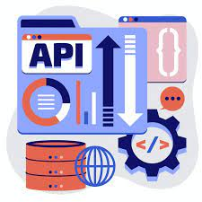

book_2 Métodos de APIs
book_2 Manipulação de Respostas das APIs
book_2 Simulação com JSON Server e MockAPI
Métodos de API (Application Programming Interface) são as ações ou comandos específicos que um software pode usar ra solicitar serviços ou dados de outro software, funcionando como verbos que descrevem o que fazer (como GET para buscar, POST para criar, etc.), baseados em protocolos como HTTP, para permitir a comunicação entre sistemas de forma padronizada e eficiente, como consultar o clima ou usar um login social.
APIs REST utilizam métodos HTTP para realizar diferentes operações:
Pense nisso como ações em um caderno:

O método POST envia dados para criar um novo recurso no servidor.
// Estrutura básica de uma requisição POST
fetch('https://api.exemplo.com/usuarios', {
method: 'POST',
headers: {
'Content-Type': 'application/json'
},
body: JSON.stringify({
nome: 'Maria Silva',
email: 'maria@email.com'
})
})
.then(response => response.json())
.then(data => {
console.log('Sucesso:', data);
})
.catch((error) => {
console.error('Erro:', error);
});
O PUT substitui completamente um recurso existente.
// Atualizar usuário com ID 5
fetch('https://api.exemplo.com/usuarios/5', {
method: 'PUT',
headers: {
'Content-Type': 'application/json'
},
body: JSON.stringify({
nome: 'Maria Silva Santos',
email: 'maria.santos@email.com',
telefone: '11999999999'
})
})
.then(response => response.json())
.then(data => {
console.log('Sucesso:', data);
})
.catch((error) => {
console.error('Erro:', error);
});
O DELETE remove um recurso do servidor.
// Deletar usuário com ID 5
fetch('https://api.exemplo.com/usuarios/5', {
method: 'DELETE'
})
.then(response => response.json())
.then(data => {
console.log('Sucesso:', data);
})
.catch((error) => {
console.error('Erro:', error);
});
Observe que o DELETE geralmente não precisa de body, apenas a URL com o ID do recurso.
Nem todas as APIs retornam um corpo de resposta para requisições DELETE. Algumas podem retornar apenas um status de sucesso (como 204 No Content).
const novoProduto = {
nome: 'Notebook',
preco: 2500,
estoque: 10
};
const produtoJSON = JSON.stringify(novoProduto);
// Resultado: '{"nome":"Notebook","preco":2500,"estoque":10}'
fetch('https://api.exemplo.com/produtos', {
method: 'POST',
headers: {
'Content-Type': 'application/json'
},
body: produtoJSON
})
.then(response => response.json())
.then(data => {
console.log('Sucesso:', data);
})
.catch((error) => {
console.error('Erro:', error);
});
Crie uma função que monte um objeto chamado "novoUsuario" contendonome, email e idade. Em seguida, envie esse objeto para a API JSONPlaceholder usando o método POST e a url "https://jsonplaceholder.typicode.com/users". Em seguida, exiba a resposta da API no console.
function exercicioPOST() {
const novoUsuario = {
nome: 'João Santos',
email: 'joao@email.com',
idade: 25
};
fetch('https://jsonplaceholder.typicode.com/users', {
method: 'POST',
headers: {
'Content-Type': 'application/json'
},
body: JSON.stringify(novoUsuario)
})
.then(response => response.json())
.then(data => {
console.log('Usuário criado:', data);
})
.catch((error) => {
console.error('Erro:', error);
});
}
// Chame a função para testar
exercicioPOST();
Crie uma função que monte um objeto chamado "postAtualizado" contendo id, title, body e userId. Em seguida, envie esse objeto para a API JSONPlaceholder usando o método PUT e a URL https://jsonplaceholder.typicode.com/posts/1 para atualizar o post com id 1 e exiba a resposta no console.
function exercicioPUT() {
const postAtualizado = {
id: 1,
title: 'Título Atualizado',
body: 'Conteúdo completamente novo',
userId: 1
};
fetch('https://jsonplaceholder.typicode.com/posts/1', {
method: 'PUT',
headers: {
'Content-Type': 'application/json'
},
body: JSON.stringify(postAtualizado)
})
.then(response => response.json())
.then(data => {
console.log('Usuário criado:', data);
})
.catch((error) => {
console.error('Erro:', error);
});
}
// Chame a função para testar
exercicioPUT();
Crie uma função chamada "exercicioDELETE"que paga uma postagem com id 1 por meio da API JSONPlaceholder usando o método DELETE e a URL https://jsonplaceholder.typicode.com/posts/1.
function exercicioDELETE() {
fetch('https://jsonplaceholder.typicode.com/posts/1', {
method: 'DELETE'
})
.then(response => {
if (response.ok) {
console.log('Item deletado com sucesso!');
} else {
console.error('Erro ao deletar item:', response.status);
}
})
.catch((error) => {
console.error('Erro ao deletar:', error);
});
}
// Chame a função para testar
exercicioDELETE();
Quando você faz uma requisição, a API retorna uma resposta (response) que contém:
fetch('https://api.exemplo.com/dados')
.then(response => {
console.log('Status:', response.status); // Ex: 200
console.log('OK?', response.ok); // true se status entre 200-299
if (!response.ok) {
throw new Error(`Erro HTTP! Status: ${response.status}`);
};
});
// Para JSON (mais comum)
const dados = response.json();
// Para texto simples
const texto = response.text();
// Para Blob (arquivos, imagens)
const blob = response.blob();
// Para JSON (mais comum)
const dados = response.json();
// Para texto simples
const texto = response.text();
// Para Blob (arquivos, imagens)
const blob = response.blob();
São palavras-chave introduzidas no ES2017 (ES8) que tornam o trabalho com Promises muito mais simples e legível, permitindo escrever código assíncrono que parece síncrono.
fetch('https://api.exemplo.com/dados')
.then(response => response.json())
.then(dados => console.log(dados))
.catch(erro => console.error(erro));
async function pegarDados() {
try {
const response = await fetch('https://api.exemplo.com/dados');
const dados = await response.json();
console.log(dados);
} catch (erro) {
console.error(erro);
}
}
pegarDados();
1. Usar async na frente de uma função
async function exemplo() {
return "Olá"; // retorna Promise.resolve("Olá")
}
exemplo().then(console.log); // "Olá"
2. await só pode ser usado dentro de funções async
async function demo() {
const resultado = await algumaPromise(); // espera aqui
console.log(resultado); // só executa depois
}
//Encadeamento simples (muito mais legível que vários .then)
async function obterUsuarioEPosts(id) {
const usuario = await fetch(`/api/usuarios/${id}`).then(r => r.json());
const posts = await fetch(`/api/posts?userId=${id}`).then(r => r.json());
console.log(usuario.nome, "tem", posts.length, "posts");
}
// Executar várias requisições em paralelo (mais rápido)
async function obterDadosRapido(id) {
const [usuario, posts, fotos] = await Promise.all(
[
fetch(`/api/usuarios/${id}`).then(r => r.json()),
fetch(`/api/posts?userId=${id}`).then(r => r.json()),
fetch(`/api/fotos?userId=${id}`).then(r => r.json())
]
);
console.log(usuario, posts, fotos);
}
// Tratamento de erros com try/catch (muito mais limpo que .catch)
async function login(email, senha) {
try {
const response = await fetch('/api/login', {
method: 'POST',
body: JSON.stringify({ email, senha })
});
if (!response.ok) throw new Error('Login falhou');
const usuario = await response.json();
return usuario;
} catch (erro) {
console.error('Erro no login:', erro.message);
return null;
}
}
// Usando em arrow functions (muito comum)
const carregarDados = async () => {
const dados = await fetch('dados.json').then(r => r.json());
return dados;
};
| Situação | Funciona? | Observação |
|---|---|---|
| await fora de função async | Não | Erro de sintaxe |
| await dentro de função async | Sim | Funciona normalmente |
| async em método de classe | Sim | async metodo() { await ... } |
| await em loop for normal | Sim | Executa sequencialmente (um depois do outro) |
| await em forEach | Cuidado! | Use for...of ou Promise.all |
npm install -g json-server
OBS 1: Para instalar em outra pasta, use:
npm install -g json-server --prefix /caminho/para/pasta
OBS 2: É preciso já ter o Node.js instalado no ambiente.
{
"produtos": [
{
"id": 1,
"nome": "Notebook",
"preco": 2500
},
{
"id": 2,
"nome": "Mouse",
"preco": 50
}
],
"usuarios": [
{
"id": 1,
"nome": "Ana",
"email": "ana@email.com"
}
]
}
json-server --watch db.json --port 3000
// API rodando em http://localhost:3000
async function exemploJSONServer() {
// GET - Buscar todos os produtos
const response = await fetch('http://localhost:3000/produtos');
const produtos = await response.json();
console.log(produtos);
// POST - Criar novo produto
const novoProduto = {
nome: 'Teclado',
preco: 150
};
const respostaCriacao = await fetch('http://localhost:3000/produtos', {
method: 'POST',
headers: { 'Content-Type': 'application/json' },
body: JSON.stringify(novoProduto)
} );
const produtoCriado = await respostaCriacao.json();
console.log('Produto criado:', produtoCriado);
// PUT - Atualizar produto
const respostaAtualizacao = await fetch(`http://localhost:3000/produtos/${produtoCriado.id}`, {
method: 'PUT',
headers: { 'Content-Type': 'application/json' },
body: JSON.stringify({ ...produtoCriado, preco: 180 })
} );
// DELETE - Deletar produto
await fetch(`http://localhost:3000/produtos/${produtoCriado.id}`, {
method: 'DELETE'
} );
}
// Substitua YOUR_PROJECT_ID pelo ID do seu projeto
const API_BASE = 'https://YOUR_PROJECT_ID.mockapi.io/api/v1';
async function exemploMockAPI() {
// Criar usuário
const novoUsuario = {
nome: 'Carlos',
email: 'carlos@email.com',
idade: 30
};
const response = await fetch(`${API_BASE}/usuarios`, {
method: 'POST',
headers: { 'Content-Type': 'application/json' },
body: JSON.stringify(novoUsuario)
} );
const usuario = await response.json();
console.log('Usuário criado no MockAPI:', usuario);
}
| Característica | JSON Server | MockAPI |
|---|---|---|
| Onde roda | Local (seu computador) | Nuvem (online) |
| Tempo de vida | Permanente | Temporário |
| Compartilhamento entre abas | Sim | Não (cada aba tem o seu) |
| Instalação | Requer Node.js | Sem instalação |
| Gratuito | Sim, 100% | Sim, com limites |
| Velocidade | Muito rápido | Depende da internet |
| Melhor para | Desenvolvimento local | Testes e demos |